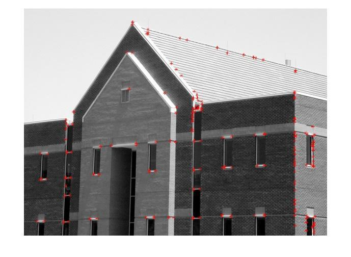
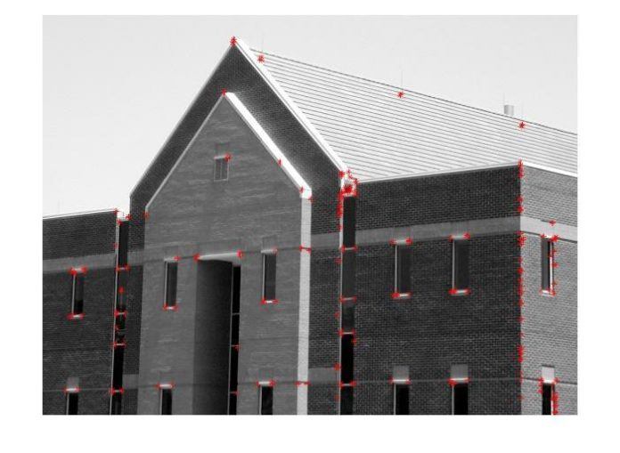
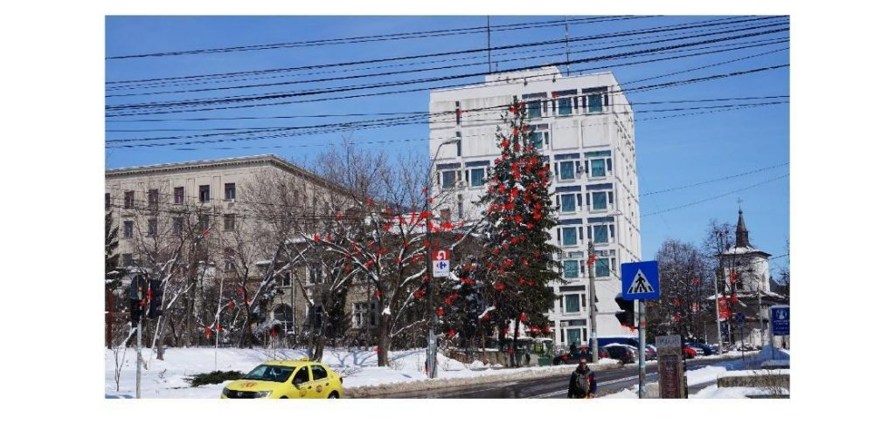

Data publicării: 23.03.2018
Autor articol: Anca Ignat
În imaginile digitale, colțurile sunt trăsături locale care prezintă interes în probleme de urmărire a unor obiective în secvențele video, în localizare, SLAM (simultaneous localisation and mapping), în compararea conținutului imaginilor, detecția obiectelor, reprezentarea imaginilor, ș.a.m.d. Colțurile pot fi definite ca pixeli la intersecția a două muchii sau în vecinătatea cărora există două direcții dominante. Colțurile reprezintă aproximativ 0.05% din mulțimea tuturor pixelilor. Un punct de interes într-o imagine este un punct cu o poziție foarte bine definită și care poate fi detectat în mod robust. Un punct de interes poate fi un colț dar de asemenea poate fi și un punct izolat cu intensitate locală extremă, sau capetele segmentelor, sau un punct pe o traiectorie care are curbura maximă. În literatura de specialitate, detecția colțurilor înseamnă de obicei identificarea punctelor de interes, noțiunile de „colț”, „punct de interes” sau „trăsătură” sunt echivalente. Asemenea puncte apar ca o consecință a discontinuităților geometrice sau la zonele de joncțiune între texturi diferite. Există o varietate mare de algoritmi care detectează colțurile sau punctele de interes într-o imagine [1]-[5]. Descriem în continuare câteva tipuri de metode care tratează această problemă.
1) Detectori de colțuri bazate pe muchii: în general o muchie într-o imagine corespunde frontierei dintre două regiuni. Colțurile sunt puncte pe această frontieră în care are loc o schimbare rapidă de direcție.
a) Detectori de colțuri obținuți prin înlănțuirea muchiilor – acest tip de metodă constă in detecția și înlănțuirea unor muchii și analiza proprietăților muchiilor, colțurile fiind puncte cu grad mare de curbură. O metodă clasică este folosirea unei parabolă pentru a estima panta curbei descrisă de muchii sau chiar o pereche de parabole pentru a detecta unghiul curbei într-un anumit punct. Alternatiev, colțurile pot fi definite ca puncte de discontinuitate a pantei medii.
b) Detectori de colțuri bazate pe pixeli-muchie – analiza în ferestre 3×3 a prezenței sau absenței pixelilor-muchie duce la asocierea unei curburi pentru pixelii respectivi, colțurile sunt acei pixeli-muchie de curbură maximă. Se poate folosi transformata Hough generalizată pentru a înlocui pixelii-muchie cu linii scurte, colțurile se găsesc la intersecția acestor linii.
2) Colțuri detectate folosind derivatele discrete a nivelurilor de gri dintr-o imagine – unul din cei mai cunoscuți detectori de colțuri de acest tip este DET, care definește colțurile ca fiind punctele de extrem local ale determinantului matricei Hessiene asociate imaginii analizate, H(I)=IxxIyy-(Ixy)2. Colțuri pot fi găsite ca fiind pixeli plasați pe o linie care unește două puncte cu curbură Gaussiană mare, de semne opuse, pixeli cu valoare maximă a gradientului.
a) Detectori de colțuri bazați pe sume locale de diferențe la pătrat (SSD – Sum of Squared Differences). Auto-similaritatea unui bloc într-o imagine poate fi calculată folosind SSD între blocul original și o variantă șiftată. Unul din cei mai cunoscuți detectori de colțuri, cel introdus de Harris și Stephens, folosește derivata secundă a acestor sume de diferențe, derivată calculată în raport cu variabila de deplasare.
b) Detectori de colțuri care folosesc operatorul Laplacian. Laplacianul conține informații legate de derivatele de ordinul al doilea pentru o imagine și are nedoritul efect de a amplifica zgomotul. Din acest motiv, se folosește varianta cu efect de netezire LoG (Laplacian of Gaussian) care aplică un filtru Gaussian de netezire înainte de calculul Laplacianului. Punctele de maxim ale rezultatului aplicării operatorului LoG sunt posibile colțuri într-o imagine (parametrii Gaussianului aplicat în prealabil ajută la localizarea colțurilor). Colțuri invariante la scală pot fi obținute prin folosirea filtrelor DoG (Difference of Gaussians) la scale diferite (trei pe octavă) și selectând punctele de maxim local în spațiu și la nivel de scală. Filtrele DoG sunt mult mai ușor/rapid de calculat și sunt o bună aproximare a filtrului Log.
3) Detectori de colțuri care analizează direct imaginile gri – se analizează blocuri mici din imagine pentru a decide dacă par a fi colțuri.
a) Modele pană (ic) – se presupune că un colț seamănă cu una sau mai multe pene de intensitate uniformă având un fundal de intensitate uniformă dar distinctă. De exemplu, un colț poate fi modelat ca find unul sau mai multe imagini-pană estompate și pentru care parametrii sunt găsiți cu metode statistice. Modelele includ parametri cum ar fi unghiul, orientarea, contrastul, gradul de rotunjire (bluntness) a unei pene. Aceste imagini model pot fi folosite asemănător cu modul de aplicare a filtrelor de convoluție, încercându-se optimizarea raportul semnal/zgomot pentru a decide prezența colțurilor într-o imagine. Este mult mai simplu detecția penelor în imaginile binare, de obicei transformându-se imaginea gri într-una binară aplicându-se o binarizare cu prag. Dacă un colț este o imagine pană binară, se pot folosi momentele Zernike pentru detecția colțurilor.
b) Auto-disimilaritate – vârful unei pene nu este auto-similar, această constatare poate conduce la definirea unui colț ca fiind un punct care nu este auto-similar. Proporția pixelilor dintr-un disc plasat în jurul unui centru (sau nucleu) care sunt similari cu centrul este o măsură de similaritate. Astfel se definește USAN (univalue segment asimilating nucleus). Colțurile sunt definite ca fiind SUSAN (cele mai mici, ‚smallest’, USAN-uri, adică niste puncte de minim local) care satisfac o mulțime de proprietăți suplimentare care ajută la eliminarea acelor puncte a care nu îndeplinesc anumite condiții calitative. De obicei, se folosește o sumă ponderată a numărului de puncte din interiorul discului a căror intensitate este apropiată de a nucleului. Auto-similaritatea poate fi măsurată folosind un cerc în locul unui disc. Suma diferențelor la pătrat (SSD) între pixelul central și pixelii plasați la capătul unei linii diametru constituie o măsură direcțională a auto-disimilarității. Dacă această măsură are valori mici în orice direcție, atunci punctul respectiv nu este un colț. Această abordare este eficientă din punct de vedere computațional, deoarece procesul poate fi oprit imediat ce se calculează o valoare mică de disimilaritate. Acest detector poate fi îmbunătățit prin folosirea Laplacianului, impunându-se restricția suplimentară ca punctele să fie puncte de maxim ale Laplacianului. Un alt mod de a calcula auto-similaritatea este prin compararea pixelului nucleu cu valoarea mediană a pixelilor din regiunea locală din jurul nucleului.
c) Detectori de colțuri care se bazează pe tehnici de învățare automată – detectorii de colțuri prezentați anterior folosesc anumite modele și aplică algoritmi specifici pentru a detecta colțurile direct în imagine. O alternativă este antrenarea unui clasificator pe modelul propus și apoi folosirea acelui clasificator pe imagine. În locul folosirii unui model, se poate folosi o prelucrare manuală a unor operatori umani, care marchează punctele de interes pe un set de imagini. Pornind de la această marcare a punctelor cheie, se poate antrena un clasificator SVM pentru a detecta în alte imagini porțiunile similare.
Criterii de evaluarea a performanțelor detectorilor de colțuri
În multe situații evaluarea calității metodelor propuse pentru detecția colțurilor se face folosind câteva imagini făcându-se comparația cu alte metode de detecție a colțurilor aplicate pe același set de imagini. În [6] se propun două metode de evaluare automată a calității detecției colțurilor și anume consistența numărului de colțuri și acuratețea. Dacă se notează cu N0 numărul de colțuri din imaginea originală, Nm numărul de colțuri găsite în imaginea transformată comparativ cu cele din imaginea originală, Nt numărul de colțuri în imaginile transformate. Consistența poate fi definita ca raportul dintre Nm și N0. O altă măsură a consistenței numărului de colțuri este dată de formula CCN=100×1.1-|Nt-N0|. Acuratețea se evaluează prin compararea poziției colțurilor detectate cu poziția reală, cu cât sunt colțurile detectate mai aproape de poziția reală cu atât acuratețea crește. De asemenea, în acuratețe, ar trebui incluse și numărul colțurilor detectate. Pentru a calcula aceste măsuri este nevoie de un set de imagini adnotate. Problema adnotării colțurilor sau a punctelor de interes este una subiectivă, de aceea atunci când se face marcarea colțurilor se recurge la ajutorul unor persoane care să fie familiare cu problema identificării punctelor de interes (dar să nu fie familiare cu algoritmul de detecție a colțurilor testat). Sunt considerate colțuri sau puncte de interes acele puncte marcate de cel puțin 70% din evaluatori.



Referințe bibliografice
1. Patel, T. P., & Panchal, S. R. (2014). Corner detection techniques: an introductory survey. 2014 IJEDR, Volume 2, Issue 4, ISSN: 2321-9939.
2. Vishwakarma, V., & Maru, J. (2016). A Review Paper On Different Corner Detection Technique, International Journal of Science, Engineering and Technology Research (IJSETR), Volume 5, Issue 4, April 2016.
3. Subban, R. & Prabakaran, (2015) Corner Detection Methods. Middle-East Journal of Scientific Research 23 (10): 2521-2532, 2015.
4. Rosten, E., Porter, R., & Drummond, T. (2010). Faster and better: A machine learning approach to corner detection. IEEE transactions on pattern analysis and machine intelligence, 32(1), 105-119.
5. Chen, J., Zou, L. H., Zhang, J., & Dou, L. H. (2009). The Comparison and Application of Corner Detection Algorithms. Journal of multimedia, 4(6).
6. Mokhtarian, F., & Mohanna, F. (2006). Performance evaluation of corner detectors using consistency and accuracy measures. Computer Vision and Image Understanding, 102(1), 81-94.